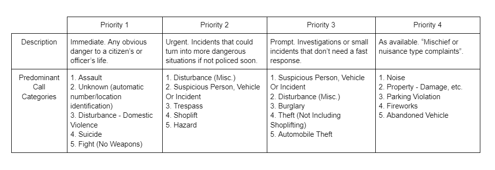

Now This Is a Story All About How...
Here would be a good place to insert an anecdote about our research topic. As discussed, we could talk about how local Seattle businesses might feel about police response times and their impact on individuals' perception of public security.
The following paragraph would be a good lead-in, or hook, aimed at pointing out the fact that the issue of police response times is multi-dimensional; that is, this article aims to address potential factors impacting police response times, using Seattle as a case study. We really do need to emphasize that all of the data we visualize will pertain to the city of Seattle, and not police response times in general.
 How have Seattle police response times changed over time?
How have Seattle police response times changed over time?
General Trends in Seattle PD Response Times
First, we would likely provide some brief analysis about average police response times in Seattle across the years, which would align with our findings in the following visualizations for this part. We preface this by saying that the visualizations we created considering calls with priorities between 1-4. Further below (or perhaps below here), an interactive card group will explain precisely those priorities mean.
Understanding Call Priorities
At the very end, or rather, in this short paragraph, we might explain the basic interactions associated with this visualization, should they exist. If the visualization is indeed static, then we might consider highlighting key aspects of the data based on the visualization.
Alternatively, if we fit a small visualization on the side here, we can explain it in this column beside it on the right. This would make it so that the analysis/use text is easily accessible to a user to this first visualization.
Main observationL clearly, Seattle PD response times have steadily increased over time.
We wrap up the first visualization pretty quickly, explaining its relevance in providing a rough overview of average Seattle police response times and their change over time.
As a general note, this part of the article would be a good place for most of our static visualizations. And as yet another note, any interactive visualizations we create should have text describing how to interact with them somewhere in the article or near the area of the visualization.
Main observation: increases in response times over the years are occurring across all call priorities, rather than for specific priority calls.
On the Impact of Select Factors on Citywide Police Response Times
Survey says: we will add a graph here that allows the user to view an interactive line graph whose axes can change based on user selection. More details to come as we develop the interactive components, I'm sure. The purpose of this section is to view average police response times while comparing them to general statistics about Seattle, irrespective of neighborhood, beat, or other geographic marker (or so I'm led to believe).
For this part, I feel having the visualization sit on its own, rather than in a column layout, makes more sense considering the increased level of interactivity. The focus of this visualization will continue to be about Seattle response times, but now examining potential factors in (slightly) greater detail. We don't want to show all of our cards on table before we've prepped the real meat and potatoes, though--that would ruin the surprise for our audience.
As usual, we might make a brief comment about the factors we examined in this particular visualization in this subsequent paragraph. Oh, the joys of creating filler text. I should emphasize that we still prompt the audience to make their own observations - we are simply pointing out some which we found somewhat notable.
Main observation: This graph allows us to look at possible citywide influences on increasing response time. Unsurprisingly, both budget and employment have a strong negative correlation with response times, population has a decent positive correlation, and crime rate has no real correlation. We would somehow tie this into a transition into the next segment, which relates to population demographics.
The Finer Things in Life, Like Neighborhoods
As it stands, this section is currently focused on examining specific details about neighborhoods which might correlate to police response times. As has been the case with this article, this part aims to move to a more granular level of analysis of the topic.
Opening text: These changes in police response times aren't equal across all parts of Seattle. Worthy of our time to look at specific beats, or subsets of police areas, and see which are disproportionately affected or "safe" from this trend.
Look at B1, B2, B3 to ascertain why they remained among the worst.
Look at U1, D3. What caused their 2022 increase?
Look at M3. Why did it stay low?
Look at W3, M1. Where did they come from in their decrease?
Look at E2. Why did it leave lowest?
A lot happened between 2018 and 2022. Might be due to the citywide factors we saw earlier.
Here's a heatmap of neighborhoods, racial groups, and the percentage of the population that those groups make up of those neighborhoods.
This heatmap shows the distribution of racial identities across Seattle's neighborhoods. While this visualization alone is insufficient in drawing connections to police response times, we would necessarily include other visualizations somewhere (probably somewhere after this) where we examine neighborhood/beat specific response times. Particularly, this might be the map in the next part (part 4), but that depends on what visualizations we intend to keep or add to this article.
We found that there is no correlation between beat population density and response times.
I Love Maps, You Love Maps, We All Love Data Visualization
The crowning jewel, so splendidly does it shine: a map of beats (or neighborhoods) and average response times, filtered by priority. We would need to remind the audience that the call data we used to produce the response time calculates are limited to those with priority level 1-4.
A final remark about the map, perhaps.
Main observation: the general trend shows that police response times, when considering all priority calls, decreased slightly when going from the range 2006-2010 to 2011-2015, but then increased from 2011-2015 to 2016-2020. We would need to carefully remind the audience that we are examining year ranges here, and not individual years, as in Part 1.
A Call to Action, an End to this Article
 Police dispatchers at work
Police dispatchers at work
Now's as good a time as any to wrap up any final observations that we have to bring to the table.
What's important is that we remind our audience that issue of Seattle police response times is influenced by many factors. We hope that our findings challenged preconceived notions of why police response times might be the way they are; at the very least, our aim was to expose our audience to different perspectives, perhaps one that may not be readily apparent without exploring the datasets addressed in this article in depth.
We this last paragraph, we ought to present our call to action. If we so choose, we can lead with our motivation for doing so, although that may be addressed by the previous paragraph in the final article. I shouldn't be too surprised that we managed to make the rough layout look like a bona-fide article, but still I remain pleasantly surprised.
Attributions
Datasets
- This is an awesome dataset.
- I hope you've heard of this one too!
- Naturally, these are to be updated in the final draft.
References
- Here's that one source we'll probably use in the intro section.